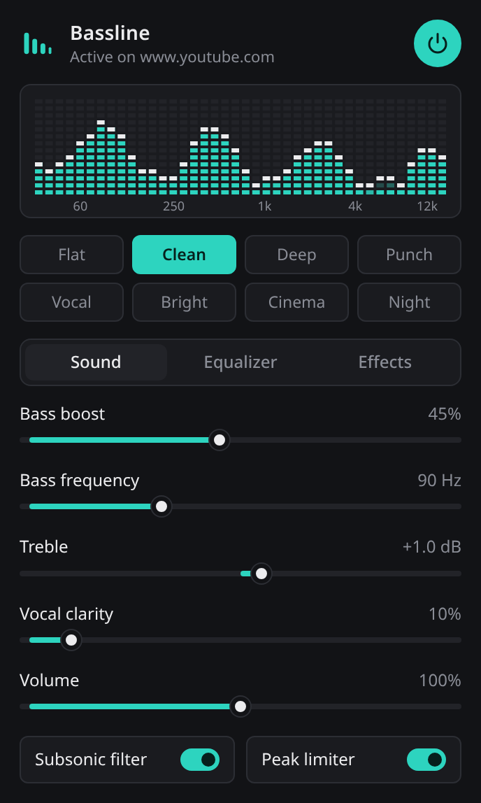
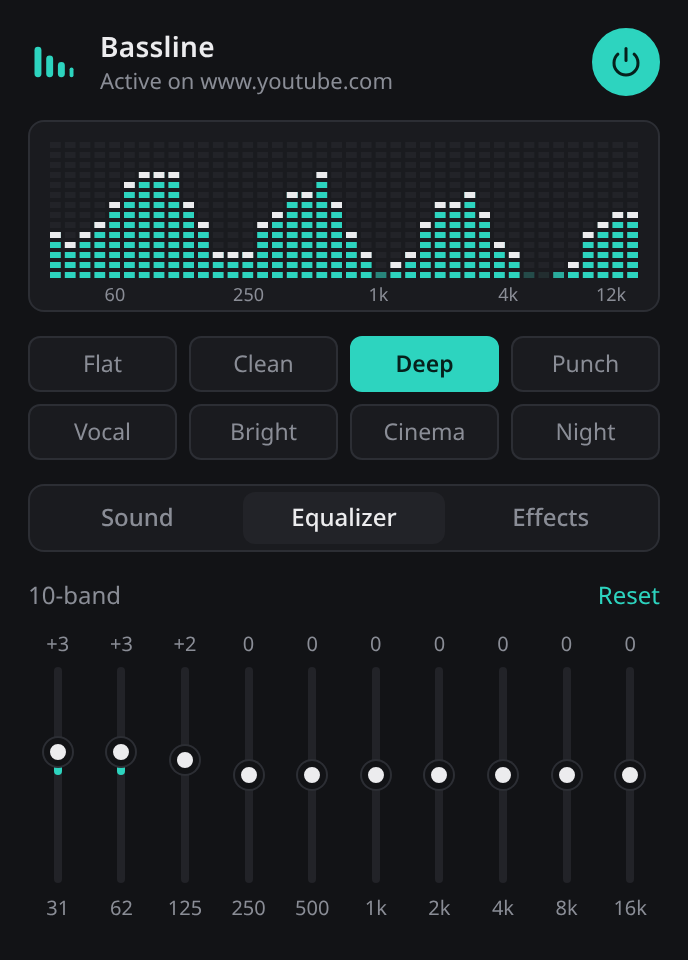
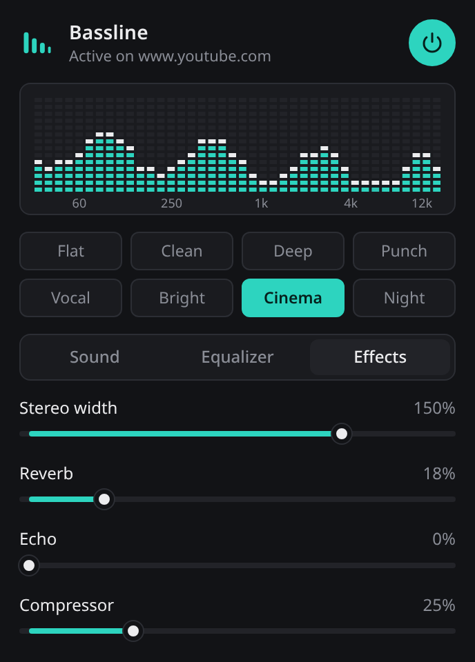

Bassline boosts the low end without the distortion, and adds a 10-band equalizer, reverb, echo, stereo width and a compressor. One click per tab.
Chrome 116 or newer. Free, with the source on GitHub.

Everything runs through one audio chain built so that boosting bass does not push the signal into clipping.
A low shelf plus a gentle peak, with a tunable frequency from 40 to 200 Hz and automatic headroom as you turn it up.
31 Hz to 16 kHz, 12 dB up or down per band. Double-click a band to reset it.
Flat, Clean, Deep, Punch, Vocal, Bright, Cinema and Night. Tweak any of them and keep your own.
Reverb, echo, stereo width from mono to 200 percent, and a compressor for evening out loud and quiet parts.
A subsonic filter removes rumble your speakers cannot play, and a peak limiter catches anything that would clip.
A segmented meter with peak hold shows what the tab is playing after your settings are applied.


Until it is on the Chrome Web Store, load it manually. It takes about a minute.
chrome://extensions and turn on Developer mode.Bassline does not collect, store or send any data. It has no analytics, no account and makes no network requests.
Audio from a tab is processed on your device only while you have switched Bassline on for that tab, and it is never recorded. Your slider settings are saved in Chrome's local extension storage on your computer.
Permissions used: tab capture and offscreen to process the audio, storage to remember your settings, and active tab to know which tab you switched it on for.